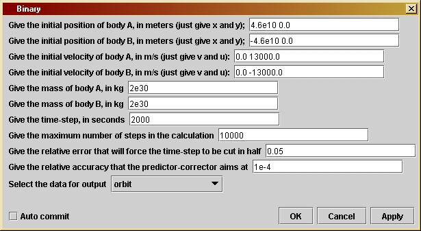
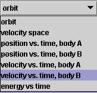

Binary
|
You can change 11 parameters using the parameter window. The first one is the initial position of the first body, called "body A". Rather than enter the x- and y-coordinates of its position in separate lines, as in Orbit, here you enter them (in meters) in the same field, simply separated by spaces. (Do not put a comma between them or brackets around them. This will confuse the computer! But you can use more than one space, and you can put spaces before and after the numbers as well. These extra spaces will be ignored.) In the second line you enter the starting position of "body B". In the next two lines you enter their initial velocities, again using numbers with spaces between to give the two velocity components (in meters per second). Lines 5 and 6 allow you to enter the masses of the bodies (in kg), and the remaining lines are similar to those in Orbit. You should adjust the time-step and accuracy parameters if the calculation seems to be taking too long; allowing a lower degree of accuracy may still give acceptable results and could speed up the computation. To check whether the accuracy is acceptable, do an identical run with higher accuracy; if the result is not perceptibly different then you can feel safe at the lower accuracy settings.
The
final choice-box opens up as shown here. Normally you will want to use
the first option, to draw the orbits. But if you are interested in the
velocities, or the periods of the orbits, or the conservation of
energy,
you can display the other quantities. There are some suggestions in the
next section about using these other options. The choices are similar
to
those for Orbit, so you should see the
help
file for that program for further explanation. The final option,
plotting
the different energies against time, requires three outputs, so when
you
select this Triana automatically adds another output node to the Binary
unit. You need to add an extra input node to the SGTGrapher
unit and then connect it to the third output node.
First do circular orbits to try to reproduce the orbits shown in Figure 13.3 (right-hand panel) of the book. Then vary the speeds again to get elliptical orbits. Notice that the heavier body A moves less than B, and that when the mass ratio is extremely small the orbits reproduce the output of Orbit for similar starting conditions. Take initial conditions appropriate for the binary system consisting of the Sun and Jupiter, and verify that the Sun's small orbit has a radius slightly larger than the Sun's own size. Change to initial conditions for, say, the Sun and Saturn, and verify that the effect on the Sun is significantly smaller. Do this again for the Sun and the Earth. In reality, of course, the Sun moves because of all the planets together, but Jupiter is the main agent. When we get to the program Multiple, you can try to simulate the whole Solar System if you want!
One difference is that many variables occur twice, once with the
last
letter A and once with B,
to refer to the two bodies. Another is that the acceleration of body A
depends on the mass and relative location of body B,
and vice-versa. Therefore, the position variables used in the
acceleration
computation are xAB and yAB,
the components of the displacement vector pointing from body B
to body A. The magnitude of this
displacement
is called rAB and its cube is rAB3.
The variable kGravityA holds the value
of
GMA, which is required to compute the acceleration of B;
and similarly for kGravityB. Thus, the
acceleration
components of the two bodies are computed with the code like the
following:
axA = -kGravityB*xAB/rAB3;
ayA = -kGravityB*yAB/rAB3;
axB = kGravityA*xAB/rAB3;
ayB = kGravityA*yAB/rAB3;
Notice the difference of sign, which is required because the variable
xAB
represents the x-displacement of A
from B,
and is used in both formulas. The acceleration of A
is toward B, so is opposite in sign to
this
variable; but the acceleration of B is
toward
A
and has the same sign as this variable.
Similarly, the computation of the angles that are used to see if the system has completed one full orbit uses the angle of the displacement of A from B, not the angles of either body with respect to the origin of coordinates. The coordinate origin is irrelevant here. In the program Orbit it was physically important because the gravitating body (the "Sun") sat there. But in this problem the coordinates could be chosen so that the origin is anywhere; the only physically important displacement is that from one body to the other. (See suggestion number 3 in the previous section.)
The time-step check and the predictor-corrector both work just on the values of the variables for body A. That is because these tests are really tests of how big the fractional changes in various quantities are, and it is clear from the above four lines of code that both bodies will experience the same fractional changes in acceleration when the position is changed. Therefore only one needs to be tested.
As with Orbit, there are several choices of output and so the output
section is rather involved. This need not be of interest to you if you
are just trying to understand the physics of orbits.
If you want to change the program you will have to re-compile it, as explained by the help file Using Triana for Gravity from the ground up.
/*
initVelA is the String used by the program to
allow users
to input the initial velocity of body A in the
parameter
window. The String is processed to obtain the
initial x-
and y-velocity components, which are stored
in vInitA
and uInitA. There are analogous variables for
body B. All
velocities are given in m/s.
*/
private String initVelA;
private double vInitA;
private double uInitA;
private String initVelB;
private double vInitB;
private double uInitB;
/*
MA is the mass (in kg) of body A.
MB is that of body B. Both
are set by the user in the parameter
window.
*/
private double MA;
private double MB;
/*
dt is the time-step in seconds.
It is set by the user in the
parameter window.
*/
private double dt;
/*
maxSteps is the maximum number of
steps in the calculation.
This is used to ensure that the
calculation will stop even
if initial values are chosen so
that the projectile goes far
away. It is set by the user in the
parameter window.
*/
private int maxSteps;
/*
eps1 sets the accuracy of the
time-step.
If computed quantities
change by a larger fraction than
this in a time-step, the time-step
will be cut in half, repeatedly
if necessary. It is set by the user
in the parameter window.
*/
private double eps1;
/*
eps2 sets the accuracy of the
predictor-corrector
step. Averaging
over the most recent time-step is
iterated until it changes by
less than this relative amount.
It is set by the user in the
parameter window.
*/
private double eps2;
/*
outputType regulates the data that
is to be output from the program.
The computation produces many kinds
of data: positions, velocities,
energies. In order to make them
accessible, the user can select a
value for this String, and the unit
will output the required data.
First-time programmers can safely
ignore these output issues, which
add some length to the program,
although in a straightforward way.
Here are the choices and the data
that they produce:
- "orbits" is the default choice
and produces two curves containing
the orbits of the two
bodies drawn in the X-Y plane. The unit
outputs this data from
two output nodes, which should both be
connected to the same
graphing unit. (To connect two inputs to
the grapher the user
must use the grapher unit's node window
to set the number of
input nodes to two.)
- "velocity space" produces two
curves in what physicists call
velocity space, a graph
whose axes are the x- and y-components of
the velocity. Since
a body on a closed orbit also comes back to
the same velocity after
one orbit, the graphs of these curves will
be closed for such
orbits.
The unit outputs this data from two
output nodes, which
should be connected to the same graphing unit.
- "position vs. time, body A"
produces
two curves for body A, one giving
the value of the
X-coordinate
(vertical axis of the graph) against
the time along the orbit
(horizontal axis) and the second giving the
Y-coordinate against
time. The unit outputs this data from two
output nodes, which
should be connected to the same graphing unit.
- "position vs. time, body B"
produces
two curves for body B, one giving
the value of the
X-coordinate
(vertical axis of the graph) against
the time along the orbit
(horizontal axis) and the second giving the
Y-coordinate against
time. The unit outputs this data from two
output nodes, which
should be connected to the same graphing unit.
- "velocity vs. time, body A" This
does the same for body A as the
position choice except
that it produces the x- and y-components of
the velocity (V and
U) as functions of time instead of the
coordinate positions.
Again the unit outputs this data from two
output nodes, which
should be connected to the same graphing unit.
- "velocity vs. time, body B" This
does the same for body B as the
position choice except
that it produces the x- and y-components of
the velocity (V and
U) as functions of time instead of the
coordinate positions.
Again the unit outputs this data from two
output nodes, which
should be connected to the same graphing unit.
- "energy vs time" This produces
three curves: the potential energy,
the kinetic energy,
and the total energy, all as functions of time.
The unit changes itself
to three output nodes and the data are output
in the order given in
the previous sentence. To see all three at
once, modify the number
of input nodes of the grapher to three and
connect them all.
*/
private String outputType;
/*
G is Newton's gravitational
constant.
It is used internally and not
set by the user.
*/
private double G = 6.6726e-11;
/*
This variable is for internal use
and is not set by the user.
*/
private TaskInterface task;
/*
Define and
initialize the variables we will need for the calculation:
- t is the
time since the beginning of the orbit.
- dt1 will
be used as the "working" value of the time-step, which can
be changed during the calculation. Using dt1 for the time-step allows
us to keep dt as the original value, as specified by the user. Thus,
dt1 is set equal to dt at the beginning of the calculation, but it may
be
reduced at any time-step, if accuracy requires it.
- vA and
uA are the x- and y-speed of body A, given here their initial values.
- vB and
uB are the x- and y-speed of body B, given here their initial values.
- xA0 and
yA0 are variables that hold x- and y-coordinate values for body A.
- xB0 and
yB0 are variables that hold x- and y-coordinate values for body B.
- xAB0 and
yAB0 are variables that hold the x- and y-coordinate displacement
from body B to body A.
- rAB is
the distance between bodies A and B.
- rAB3 is
the cube of the distance between bodies A and B.
- kGravityA
is the constant G*MA, where G is Newton's gravitational constant. This
influences the acceleration of body B.
- kGravityB
is the constant G*MB, where G is Newton's gravitational constant. This
influences the acceleration of body A.
- axA0 and
ayA0 are the x-acceleration and y-acceleration, respectively, of
body A at the location (xA0, yA0).
- axB0 and
ayB0 are the x-acceleration and y-acceleration, respectively, of
body B at the location (xB0, yB0).
-
xCoordinateA
and yCoordinateA are used to store the values of x and y of
body A at each timestep. They are arrays of length maxSteps.
-
xCoordinateB
and yCoordinateB are used to store the values of x and y of
body B at each timestep. They are arrays of length maxSteps.
- xVelocityA
and yVelocityA are used to store the values of the velocity
components v and u of body A at each timestep.
- xVelocityB
and yVelocityB are used to store the values of the velocity
components v and u of body B at each timestep.
-
potentialEnergy
and kineticEnergy are arrays that are used to store
the values of the potential and kinetic energy of the body, taking
its mass to equal 1. (The mass of the body is not needed for the
other calculations in this program, and since both energies are
simply proportional to the mass, the energies for any particular
body mass can be obtained by multiplying these values by
the mass after they are output from the program.)
- time is
an array that is used to store the value of the time
associated with the current position, as measured from the
beginning of the orbit.
*/
double t = 0;
double dt1 = dt;
double vA = vInitA;
double uA = uInitA;
double vB = vInitB;
double uB = uInitB;
double xA0 = xInitA;
double yA0 = yInitA;
double xB0 = xInitB;
double yB0 = yInitB;
double xAB0 = xA0 -
xB0;
double yAB0 = yA0 -
yB0;
double rAB = Math.sqrt(
xAB0*xAB0 + yAB0*yAB0 );
double rAB3 =
rAB*rAB*rAB;
double kGravityA = MA
* G;
double kGravityB = MB
* G;
double axA0 =
-kGravityB*xAB0/rAB3;
double ayA0 =
-kGravityB*yAB0/rAB3;
double axB0 =
kGravityA*xAB0/rAB3;
double ayB0 =
kGravityA*yAB0/rAB3;
double[] xCoordinateA
= new double[ maxSteps ];
double[] yCoordinateA
= new double[ maxSteps ];
double[] xVelocityA
= new double[ maxSteps ];
double[] yVelocityA
= new double[ maxSteps ];
double[] xCoordinateB
= new double[ maxSteps ];
double[] yCoordinateB
= new double[ maxSteps ];
double[] xVelocityB
= new double[ maxSteps ];
double[] yVelocityB
= new double[ maxSteps ];
double[] potentialEnergy
= new double[ maxSteps ];
double[] kineticEnergy
= new double[ maxSteps ];
double[] time = new
double[ maxSteps ];
xCoordinateA[0] = xA0;
yCoordinateA[0] = yA0;
xCoordinateB[0] = xB0;
yCoordinateB[0] = yB0;
/*
Now define
other variables that will be needed, but without giving
initial
values. They will be assigned values during the calculation.
- xA1, yA1,
xB1, and yB1 are temporary values of x and y for bodies A
and B, respectively, that are needed during the calculation.
- axA1,
ayA1, axB1, and ayB1 are likewise temporary values of the acceleration.
- dxA, dyA,
dxB, and dyB are variables that hold part of the changes in
x and y for bodies A and B, respectively, that occur during a time-step.
- ddxA0,
ddyA0, ddxA1, and ddyA1 are variables that hold other parts of
the changes in x and y of body A during a time-step. The reason for
having
both dxA and ddxA will be explained in comments on the calculation
below.
- ddxB0,
ddyB0, ddxB1, and ddyB1 are analogous variables for body B.
- dvA, duA,
dvB, and duB are the changes in velocity components of bodies
A and B, respectively, that occur during a time-step.
- xAB1 and
yAB1 are temporary values that hold the separations of the two
bodies.
-
testPrediction
will hold a value that is used by the predictor-corrector
steps to assess how accurately the calculation is proceeding.
- angleNow
holds the angular amount by which the planet has advanced in its
orbit at the current time-step.
- j and
k are integers that will be used as loop counters.
*/
double xA1, yA1, xB1,
yB1, axA1, ayA1, axB1, ayB1, dvA, duA, dvB, duB;
double dxA, dyA, dxB,
dyB, ddxA0, ddyA0, ddxB0, ddyB0, ddxA1, ddyA1, ddxB1, ddyB1;
double xAB1, yAB1;
double testPrediction,
angleNow;
int j, k;
/*
Finally,
we introduce some variables that are used to determine when
body A
completes
a full orbit, so that the program can stop. This is
done in
the same way as in the program Orbit, where the method is
more fully
described. The difference here is that we compute the
orbital
angular motion of A relative to B rather than relative to
the origin
of coordinates. In the program Orbit, the "other body" --
i.e. the
Sun -- was at the coordinate origin, but that is not the
case here.
What is relevant is the position relative to the other
body, not
to a fixed point in space that depends on how we choose
the
coordinates
in the first place.
*/
double angleInitPos
= Math.atan2(yAB0, xAB0);
double angleInitVel
= Math.atan2(uInitA-uInitB, vInitA-vInitB);
double anglediff =
angleInitVel
- angleInitPos;
if ( anglediff >
Math.PI
) anglediff -= 2*Math.PI;
else if (anglediff <
-Math.PI) anglediff += 2*Math.PI;
boolean counterclockwise
= ( anglediff > 0 );
boolean fullOrbit =
false;
boolean halfOrbit =
false;
/*
Now start
the loop that computes the two orbits. The loop counter
is j, which
(as in Orbit) starts at 1 and increases by 1 each
step. The
test for exiting from the loop will be either that body
A has gone
once around, or that the number of steps exceeds
the maximum
set by the user. This latter test is important because
some orbits
do not close: if the initial velocity is too large the
bodies
simply
go off to larger and larger distances. The logical
expression
that provides the test is
!fullOrbit && ( j < maxSteps )
Note the
use of the logical negation operator !: !fullOrbit is true
when
fullOrbit
is false, i.e. before the end of the orbit, so it
allows the
loop to continue.
*/
for ( j = 1; (
!fullOrbit
&& ( j < maxSteps )); j++ ) {
/*
- Set dvA and duA to the changes in x- and y-speeds that would occur
during time dt1 if the acceleration were constant at (axA0, ayA0),
and similarly for dvB and duB.
- Similarly set dxA and dyA to the changes in position that would
occur if the velocity components vA and uA were constant during the
time dt1, and similarly for dxB and dyB.
- Set ddxA0 and ddyA0 to the extra changes in x and y that occur because
A's velocity changes during the time dt1. The velocity change that
is used is only dvA/2 (or duA/2, respectively) because the most
accurate change in position comes from computing the average
velocity during dt1. We separate the two position changes, dxA and
ddxA0, because dxA will be unchanged when we do the predictor-corrector
below (the change in position due to the original speed is always
there), while ddxA0 will be modified when axA0 and hence dvA is modified
by the predictor-corrector. The handling of body B's variables is
completely analogous.
- Finally, set ddxA1 and ddyA1 to ddxA0 and ddyA0 initially. They will
change when we enter the predictor-corrector code. Do the similar
operations for ddxB1 and ddyB1.
*/
dvA = axA0*dt1;
duA = ayA0*dt1;
dxA = vA*dt1;
dyA = uA*dt1;
ddxA0 = dvA/2*dt1;
ddyA0 = duA/2*dt1;
ddxA1 = ddxA0;
ddyA1 = ddyA0;
dvB = axB0*dt1;
duB = ayB0*dt1;
dxB = vB*dt1;
dyB = uB*dt1;
ddxB0 = dvB/2*dt1;
ddyB0 = duB/2*dt1;
ddxB1 = ddxB0;
ddyB1 = ddyB0;
/*
Now advance the position of body A by our initial estimates of the
position changes, dxA + ddxA0 and dyA + ddyA0. Do the same for body
B. Then compute the new distance between the bodies and the resulting
accelerations there.
*/
xA1 = xA0 + dxA + ddxA0;
yA1 = yA0 + dyA + ddyA0;
xB1 = xB0 + dxB + ddxB0;
yB1 = yB0 + dyB + ddyB0;
xAB1 = xA1 - xB1;
yAB1 = yA1 - yB1;
rAB = Math.sqrt( xAB1*xAB1 + yAB1*yAB1 );
rAB3 = rAB*rAB*rAB;
axA1 = -kGravityB*xAB1/rAB3;
ayA1 = -kGravityB*yAB1/rAB3;
axB1 = kGravityA*xAB1/rAB3;
ayB1 = kGravityA*yAB1/rAB3;
/*
Time-step check.
This is the code to check whether the time-step is too large. The idea
is to compare the changes in acceleration of body A during the timestep
with the acceleration of body A itself. We only deal with body A, since
the test is likely to be similar for both bodies. If the change is too
large a fraction of the original value, then the step is likely to be
too large, and the resulting position too inaccurate. The code below
cuts
the time-step dt1 in half and then goes back to the beginning of the
loop.
How this works is explained more fully in the program Orbit.
*/
if ( Math.abs(axA1-axA0) + Math.abs(ayA1-ayA0) >
eps1*(Math.abs(axA0) +
Math.abs(ayA0)) ){
dt1 /= 2;
j--;
}
else {
/*
Predictor-corrector step. This is explained in program Orbit. Again,
only
the
properties of the orbit of body A are used in the tests.
*/
testPrediction = Math.abs(ddxA0) + Math.abs(ddyA0);
for ( k = 0; k < 10; k++ ) {
/* compute dvA, duA, dvB, and duB by averaging the acceleration over
dt1
*/
dvA = (axA0 + axA1)/2*dt1;
duA = (ayA0 + ayA1)/2*dt1;
dvB = (axB0 + axB1)/2*dt1;
duB = (ayB0 + ayB1)/2*dt1;
/* compute ddxA1, ddyA1, ddxB1, and ddyB1 by averaging the velocity
change
*/
ddxA1 = dvA/2*dt1;
ddyA1 = duA/2*dt1;
ddxB1 = dvB/2*dt1;
ddyB1 = duB/2*dt1;
/*
Test the change in ddx and ddy since the last iteration.
If it is more than a fraction eps2 of the original, then
ddx and ddy have to be re-computed by finding the acceleration
at the refined position.
If the change is small enough, then the "else:" clause is
executed, which exits from the for loop using the statement
"break". This finishes the iteration and goes on to wrap up
the calculation.
*/
if ( Math.abs(ddxA1-ddxA0) + Math.abs(ddyA1-ddyA0) > eps2 *
testPrediction
) {
/*
Re-define ddxA0, ddyA0, ddxB0, and ddyB0 to hold the values
from the last iteration
*/
ddxA0 = ddxA1;
ddyA0 = ddyA1;
ddxB0 = ddxB1;
ddyB0 = ddyB1;
xA1 = xA0 + dxA + ddxA0;
yA1 = yA0 + dyA + ddyA0;
xB1 = xB0 + dxB + ddxB0;
yB1 = yB0 + dyB + ddyB0;
xAB1 = xA1 - xB1;
yAB1 = yA1 - yB1;
rAB = Math.sqrt( xAB1*xAB1 + yAB1*yAB1 );
rAB3 = rAB*rAB*rAB;
axA1 = -kGravityB*xAB1/rAB3;
ayA1 = -kGravityB*yAB1/rAB3;
axB1 = kGravityA*xAB1/rAB3;
ayB1 = kGravityA*yAB1/rAB3;
/*
We now have the "best" acceleration values, using the most
recent estimates of the position at the end of the loop.
The next statement to be executed will be the first statement
of the "for" loop, finding better values of dvA, duA, ddxA1,
ddyA1, and corresponding values for body B.
*/
}
else break;
}
/*
The iteration has finished, and we have sufficiently accurate
values of the position change in ddxA1, ddyA1, ddxB1, and ddyB1.
Use them to get final values of xA, yA, xB, and yB at the end of
the time-step dt1 and store these into xA0, yA0, xB0, and yB0,
respectively, ready for the next time-step. Compute all the
rest of the variables needed for the next time-step and for
possible data output.
*/
t += dt1;
xA0 += dxA + ddxA1;
yA0 += dyA + ddyA1;
axA0 = axA1;
ayA0 = ayA1;
vA += dvA;
uA += duA;
xCoordinateA[j] = xA0;
yCoordinateA[j] = yA0;
xVelocityA[j] = vA;
yVelocityA[j] = uA;
xB0 += dxB + ddxB1;
yB0 += dyB + ddyB1;
axB0 = axB1;
ayB0 = ayB1;
vB += dvB;
uB += duB;
xCoordinateB[j] = xB0;
yCoordinateB[j] = yB0;
xVelocityB[j] = vB;
yVelocityB[j] = uB;
xAB0 = xA0 - xB0;
yAB0 = yA0 - yB0;
rAB = Math.sqrt( xAB0*xAB0 + yAB0*yAB0 );
potentialEnergy[j] = -kGravityA*MB/rAB;
kineticEnergy[j] = 0.5*( MA*(vA*vA + uA*uA) + MB*(vB*vB + uB*uB));
time[j] = t;
/*
Now test to see if the orbit has closed, i.e. if body A has gone
around body B once. We do this by the method described in the
program Orbit, but as remarked above we use the location of body
A relative to body B.
*/
angleNow = Math.atan2(yAB0, xAB0);
anglediff = angleNow - angleInitPos;
if (anglediff > Math.PI) anglediff -= 2*Math.PI;
else if (anglediff < -Math.PI) anglediff += 2*Math.PI;
if (!halfOrbit) {
if (counterclockwise) halfOrbit = (anglediff < 0);
else halfOrbit = (anglediff > 0);
}
else {
if ( counterclockwise ) fullOrbit = (anglediff > 0);
else fullOrbit = fullOrbit = (anglediff < 0);
}
}
}
/*
The orbit
is finished. Now, as in previous programs, define arrays
to contain
the positions along the orbit with just the right size,
so that
no zeros are passed to the grapher. The value of j at this
point is
equal to the number of elements we need for the output arrays.
But in this
program, check which output choice has been made and
tailor the
output to this choice. First-time programmers can safely
ignore this
section.
In previous
programs we have mainly used the Triana method "output()"
for
producing
output from a unit. This works only if the unit has
just one
output data set. In all the output cases here, we require
more than
one data set to be output, so (as in the program Orbit) we
use the
more elaborate method "outputAtNode()", which allows us to
specify
which node will output which data. The node numbering
starts with
0.
We attach
to each output Curve a title (which will appear on the
graph
legend),
and we attach to the first output Curve the axis labels.
*/
if
(outputType.equals("orbit"))
{
double[] finalXA = new double[j];
double[] finalYA = new double[j];
double[] finalXB = new double[j];
double[] finalYB = new double[j];
for ( k = 0; k < j; k++ ) {
finalXA[k] = xCoordinateA[k];
finalYA[k] = yCoordinateA[k];
finalXB[k] = xCoordinateB[k];
finalYB[k] = yCoordinateB[k];
}
Curve out0 = new Curve( finalXA, finalYA );
out0.setTitle("Orbit of Body A");
out0.setIndependentLabels(0,"x (m)");
out0.setDependentLabels(0,"y (m)");
Curve out1 = new Curve( finalXB, finalYB );
out1.setTitle("Orbit of Body B");
outputAtNode( 0, out0 );
outputAtNode( 1, out1 );
}
else if
(outputType.equals("velocity
space")) {
double[] finalVA = new double[j];
double[] finalUA = new double[j];
double[] finalVB = new double[j];
double[] finalUB = new double[j];
for ( k = 0; k < j; k++ ) {
finalVA[k] = xVelocityA[k];
finalUA[k] = yVelocityA[k];
finalVB[k] = xVelocityB[k];
finalUB[k] = yVelocityB[k];
}
Curve out0 = new Curve( finalVA, finalUA );
out0.setTitle("Velocity Plot of Body A");
out0.setIndependentLabels(0,"V (m/s)");
out0.setDependentLabels(0,"U (m/s)");
Curve out1 = new Curve( finalVB, finalUB );
out1.setTitle("Velocity Plot of Body B");
outputAtNode( 0, out0 );
outputAtNode( 1, out1 );
}
else if
(outputType.equals("position
vs. time, body A")) {
double[] finalXA = new double[j];
double[] finalYA = new double[j];
double[] finalT = new double[j];
for ( k = 0; k < j; k++ ) {
finalXA[k] = xCoordinateA[k];
finalYA[k] = yCoordinateA[k];
finalT[k] = time[k];
}
Curve out0 = new Curve( finalT, finalXA );
out0.setTitle("X(t) for Body A");
out0.setIndependentLabels(0,"t (s)");
out0.setDependentLabels(0,"position (m)");
Curve out1 = new Curve( finalT, finalYA );
out1.setTitle("Y(t) for Body A");
outputAtNode( 0, out0 );
outputAtNode( 1, out1 );
}
else if
(outputType.equals("position
vs. time, body B")) {
double[] finalXB = new double[j];
double[] finalYB = new double[j];
double[] finalT = new double[j];
for ( k = 0; k < j; k++ ) {
finalXB[k] = xCoordinateB[k];
finalYB[k] = yCoordinateB[k];
finalT[k] = time[k];
}
Curve out0 = new Curve( finalT, finalXB );
out0.setTitle("X(t) for Body B");
out0.setIndependentLabels(0,"t (s)");
out0.setDependentLabels(0,"position (m)");
Curve out1 = new Curve( finalT, finalYB );
out1.setTitle("Y(t) for Body B");
outputAtNode( 0, out0 );
outputAtNode( 1, out1 );
}
else if
(outputType.equals("velocity
vs. time, body A")) {
double[] finalVA = new double[j];
double[] finalUA = new double[j];
double[] finalT = new double[j];
for ( k = 0; k < j; k++ ) {
finalVA[k] = xVelocityA[k];
finalUA[k] = yVelocityA[k];
finalT[k] = time[k];
}
Curve out0 = new Curve( finalT, finalVA );
out0.setTitle("V(t) for Body A");
out0.setIndependentLabels(0,"t (s)");
out0.setDependentLabels(0,"speed (m/s)");
Curve out1 = new Curve( finalT, finalUA );
out1.setTitle("U(t) for Body A");
outputAtNode( 0, out0 );
outputAtNode( 1, out1 );
}
else if
(outputType.equals("velocity
vs. time, body B")) {
double[] finalVB = new double[j];
double[] finalUB = new double[j];
double[] finalT = new double[j];
for ( k = 0; k < j; k++ ) {
finalVB[k] = xVelocityB[k];
finalUB[k] = yVelocityB[k];
finalT[k] = time[k];
}
Curve out0 = new Curve( finalT, finalVB );
out0.setTitle("V(t) for Body B");
out0.setIndependentLabels(0,"t (s)");
out0.setDependentLabels(0,"speed (m/s)");
Curve out1 = new Curve( finalT, finalUB );
out1.setTitle("U(t) for Body B");
outputAtNode( 0, out0 );
outputAtNode( 1, out1 );
}
else if
(outputType.equals("energy
vs time")) {
double[] finalP = new double[j];
double[] finalK = new double[j];
double[] finalE = new double[j];
double[] finalT = new double[j];
for ( k = 0; k < j; k++ ) {
finalP[k] = potentialEnergy[k];
finalK[k] = kineticEnergy[k];
finalE[k] = finalP[k] + finalK[k];
finalT[k] = time[k];
}
Curve out0 = new Curve( finalT, finalP );
out0.setTitle("Potential energy vs time");
out0.setIndependentLabels(0,"t (s)");
out0.setDependentLabels(0,"energy (J)");
Curve out1 = new Curve( finalT, finalK );
out1.setTitle("Kinetic energy vs time");
Curve out2 = new Curve( finalT, finalE );
out2.setTitle("Total energy vs time");
outputAtNode( 0, out0 );
outputAtNode( 1, out1 );
outputAtNode( 2, out2 );
}
}